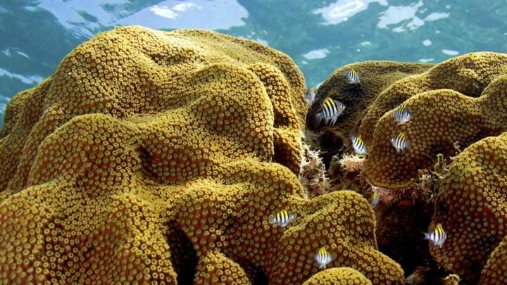

Orbicella Analysis of Hybridization- Medina Lab Penn State University
body-header: | This page brought to you by https://www.eurekalert.org/multimedia/927876 margin-header: | 
We are running an ABBA-BABA test for hybridaztion in the Orbicella species complex. The test requires a VCF file containing variants for each species against a reference (in our case, we will use the outgroup Cyphastrea as the reference), a species tree in Newik format, and a file specifying the sample-name/species pair. I was provided with genomes for O.faveolata, O. annularis, and O. franksi. I was also provided with a metagenome for Cyphastrea.
Right now, my first task is to create/find a pipeline to merge the VCF files produced from the pairwise SNP-calling in MUMmer(nucmer) into a single VCF file of (orthologous?) SNP sites shared between the three species.
Variant Calling
```{unix}
# This code calls the SNPs between the query and ref (O.fav). The
# ref will later be changed to Cyphastrea.
nucmer -c 100 -p sp1 Orbicella_faveolata_cds.fna Orbicella_annularis_cds.fna
nucmer -c 100 -p sp2 Orbicella_faveolata_cds.fna Orbicella_franksi_cds.fna
delta-filter -r -q sp1.delta > sp1.filter
delta-filter -r -q sp2.delta > sp2.filter
# Option -T is required for input to all2vcf program
show-snps -T sp1.filter > sp1_T.snps
show-snps -T sp2.filter > sp2_T.snps
```Nucmer only outputs .snps files, so I am using this script to transform the data into VCF format: https://github.com/MatteoSchiavinato/all2vcf
```{unix}
./all2vcf mummer --snps sp1_T.snps --reference Orbicella_faveolata_cds.fna --type SNP --input-header --no-Ns > sp1.vcf
./all2vcf mummer --snps sp2_T.snps --reference Orbicella_faveolata_cds.fna --type SNP --input-header --no-Ns > sp2.vcf
# Get stats on VCF files.
all2vcf stats --vcf sp1.vcf
```Troubleshooting all2vcf
margin-header: |  So something went wrong when I tried to convert the .snp output from Mummer into VCF format. The chromosome and position data is present but I don’t see genotypes.
So something went wrong when I tried to convert the .snp output from Mummer into VCF format. The chromosome and position data is present but I don’t see genotypes.
```{unix}}
bcftools view -h sp1.vcf | awk '/INFO/ || /FORMAT/'
```It looks like I don’t have a FORMAT or SAMPLE column. I only have the first 8 columns.
Demo: Explore vcf files with bcftools: https://eriqande.github.io/eca-bioinf-handbook/basic-handling-of-vcf-files.html
```{unix}
# Who is in the VCF file?
bcftools query -l chinook-32-3Mb.vcf.gz
# How many variants?
bcftools stats chinook-32-3Mb.vcf.gz
# Where are these variants? Where does it start/end?
bcftools query -f '%CHROM\t%POS\n' chinook-32-3Mb.vcf.gz
bcftools query -f '%CHROM\t%POS\n' chinook-32-3Mb.vcf.gz | head
bcftools query -f '%CHROM\t%POS\n' chinook-32-3Mb.vcf.gz | tail
# show the whole file from the top (use show just the first 10 lines)
bcftools view chinook-32-3Mb.vcf.gz | head
# show just the header with -h. Here look at just the last 10 lines of the header
bcftools view -h chinook-32-3Mb.vcf.gz | tail
# show the variants themslves (no header) with -H
bcftools view -H chinook-32-3Mb.vcf.gz | head
# Merge files. See genotypes with 100% of individuals having at least one read at the genotype.
# make file with first three samples
bcftools view -Oz -s DPCh_plate1_A05_S5,DPCh_plate1_A06_S6,DPCh_plate1_A11_S11 chinook-32-3Mb.vcf.gz > first3.vcf.gz
# make another with the last three samples
bcftools view -Oz -s DPCh_plate1_H06_S90,DPCh_plate1_H11_S95,DPCh_plate1_H12_S96 chinook-32-3Mb.vcf.gz > last3.vcf.gz
# merging requires that the files be indexed
bcftools index first3.vcf.gz
bcftools index last3.vcf.gz
# merge those into a file with 6 samples
bcftools merge -Oz first3.vcf.gz last3.vcf.gz > 6-samples.vcf.gz
# Fraction of missing sites less than X
bcftools view -i 'F_MISSING < 0.0' chinook-32-3Mb.vcf.gz | bcftools stats - | awk '/^SN/'
```Prepare outgroup genome.
My second task is to isolate the Cyphastrea coral reads from the rest of the microbiome reads. This can be broken down into a number of steps. The first of which is running Psytrans: https://github.com/sylvainforet/psytrans.
This work is being done on the Medina lab server ‘argonaute’ and can be found in the directory /home/vpg5102/Orbicella. The Symbiodiniaceae genomes can be located at /home/rag5851/Symbiodiniaceae_genomes.
The psytrans documentation isn’t that great, so Raul offered me some really helpful practical advice in setting up the files for the filtering of symbiont reads. First, I need to concatenate the coral and symbiont reference genomes into a single file. Name this file coralsymbiont_blastdb.
species1 is the host. species2 is the symbiont. Rename each of the sequence components (i.e. >scaffold.fasta) to include the species pre-fix.
Once these steps are completed, run BLAST to identify which sequences are coral vs. symbiont. Run BLAST with these flags: -output 6 (gives tabulated table) -evalue 1 e-5 -out Species1Species2_blastResults.txt
```{unix}
# Get Orbicella genomes for cnidarian database
curl https://www.ncbi.nlm.nih.gov/assembly/GCA_002042975.1
curl https://www.ncbi.nlm.nih.gov/assembly/GCA_001896105.1
# Add a broader selection of other corals as well.
# reefgenomics.org
faveolata
S.pis
A. dig
A. tenuis
P. australiensis
P. dae
Porites lutea
# So I accidentally added this file to my db: GCF_002042975.1_ofav_dov_v1_cds_from_genomic.fna. Not sure if that will impact the blast results.
``````{unix}
# Add species prefix before concatenating references.
# For concatenated host genomes.
sed “s/^>/>species1_/g”
# For concatenated symbiont genomes.
sed “s/^>/>species2_/g”
# Now concatenate Coral/Symbiont Genomes
cat *.fna > species1_species2.fasta
``````{unix}
# Creat Blastdb and designate database type
makeblastdb -in species1_species2_blastdb.fasta -dbtype nuc
#BLAST search query of cyphastrea metagenome against database.
blastn -query Cyphastrea_blast/Cyphastrea_metagenome.scaffolds.fasta -db species1_species2_blastdb.fasta -outfmt 6 -evalue 1e-5 -out Species1Species2_blastResults.txt
```Then run the psytrans code to separate the coral data from symbiont data.
```{unix}
# Make a screen. Then run psytrans. 10/16/22
# screen -S psytrans_attempt
# python psytrans.py [QUERIES] [-b BLASTRESULTSFILE] [OPTIONS]
python psytrans-master/psytrans.py Cyphastrea_metagenome.scaffolds.fasta -b Species1Species2_blastResults.txt -t tmp -p 8
```So that did not work. Apparently ‘maketrans’ is deprecated. I have to modify the script. I just changed string.maketrans to str.maketrans.